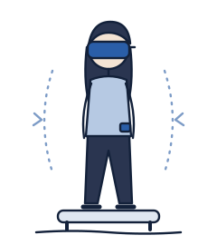
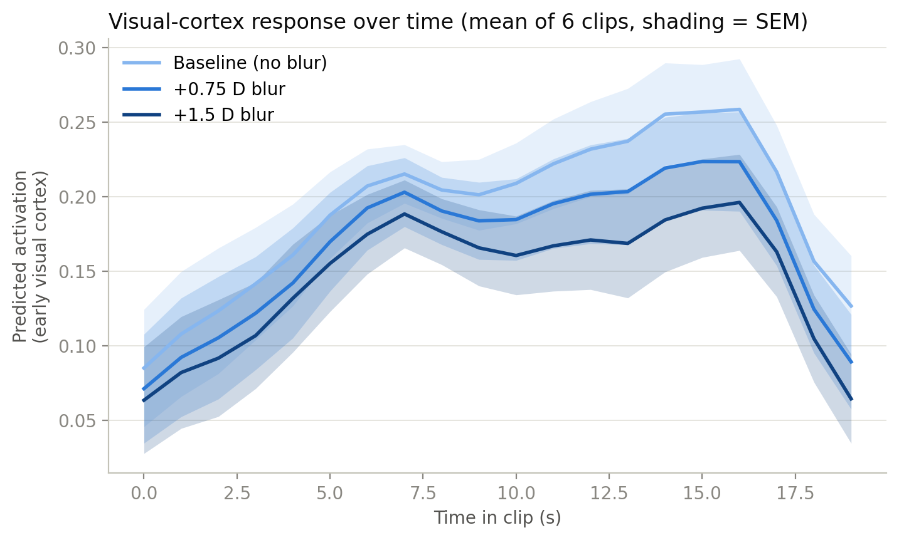

Independent research · 2026 · in progress
NeuroVestibular Ocular Sensorimotor Twin for Autonomous Training
A digital twin of balance and vision for long-duration spaceflight

In microgravity the inner ear stops being a reliable guide to balance, so the brain leans on vision. Many astronauts on long missions also develop Spaceflight-Associated Neuro-ocular Syndrome (SANS), which blurs vision. These are usually studied separately. I want to know whether balance suffers more when they overlap.
Phase 1 tests that on the ground. A VR headset simulates SANS-like blur at three levels while I measure postural sway, and I compare the sway against a risk score from Meta's TRIBE v2, which predicts how visual cortex responds to a video.
- Participants
- About 20 healthy adults, with a spotter and gait belt throughout
- Conditions
- No, mild and moderate blur; firm ground and foam; still and rotating space scenes
- Measures
- Sway on a Wii Balance Board plus two motion sensors
- Now
- Running model simulations and practicing sway analysis on the PhysioNet Human Balance Evaluation dataset (Santos & Duarte) while IRB review is pending
- Funding
- $7,000 research grant
- Next
- Finish Phase 1 by February 2027. A motion platform, eye tracking and EEG come later, only if Phase 1 shows a real effect.
